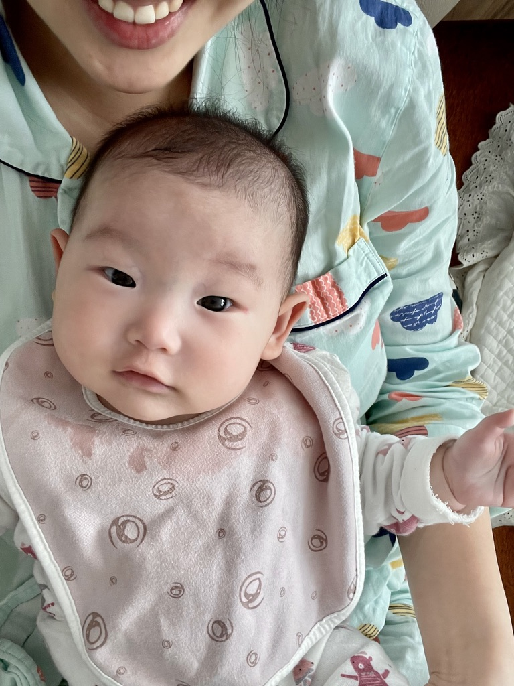

<h1><strong>전세계약 연장시 <u>주의사항</u></strong></h1>
<p>1. 전세 계약만료일에 임대인은 보증금을 돌려주고 임차인은 목적물을 돌려줄 의무가 있음.</p>
<p style="margin-top: 20px;">2. 만약 임대인이 돌려주지 않을경우 여러가지 방법을 사용할 수 있음
<br>-
</p>
coding<br>
<!-- <p> paragraph, <br>단순줄바꿈 -->


<!--src width = 속성이라고 불림-->
<!--unsplash 무료이미지 다운사이트-->


